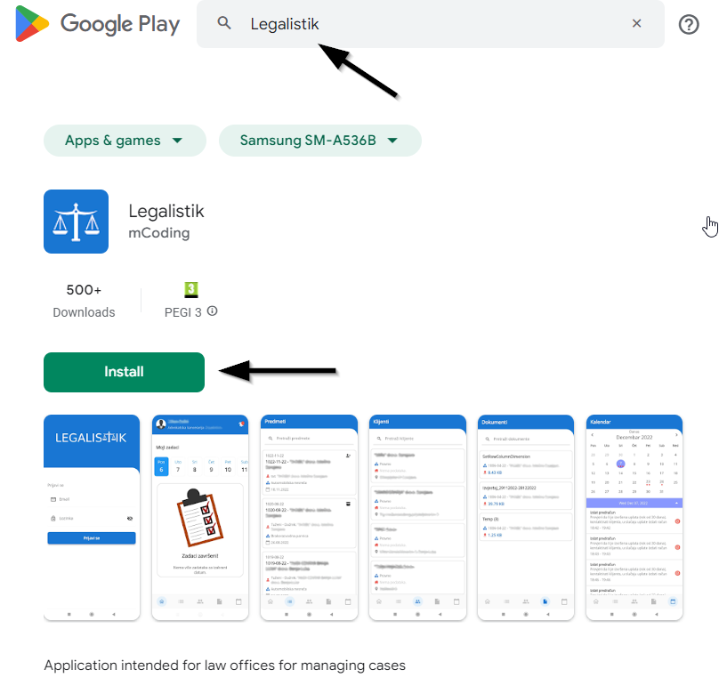
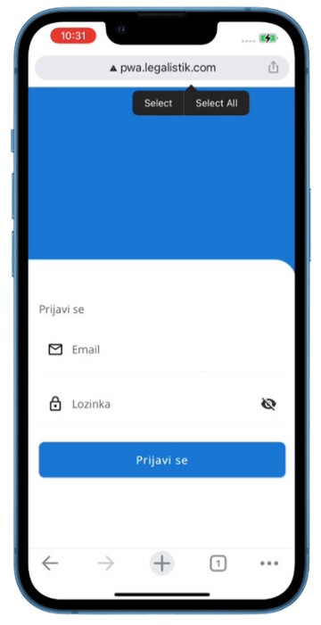
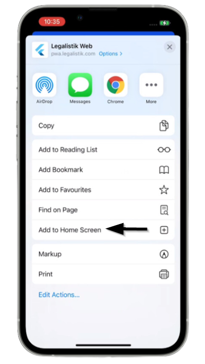
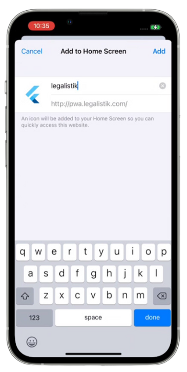
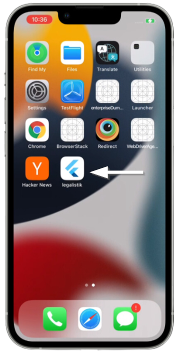

Android #
Da bi instalirali Legalistik mobilnu aplikaciju na svoj Android uređaj, potrebno je da otvorite Google Play i u pretragu unesete: “Legalistik”:

Ili samo otvorite sledeći link da odete direktno na Legalistik aplikaciju: Legalistik instalacija.
Kliknite na dugme Install i sačekajte da se aplikacija pojavi na vašem uređaju.
iOS #
Dok ne bude objevljena na App Store, Legalistik mobilna aplikacija se na iOS uređaje dodaje na sledeći način:
- Otvorite Safari web pretraživač i u polje za adresu unesite sledeće: pwa.legalistik.com, i kliknite na 3 tačkice u donjem desnom uglu:

- U listi opcija izaberite “Add to Home Screen”:

- Potvrdite naziv aplikacije i kliknite na Add u gornjem desnom uglu:

- Legalistik aplikacija će biti dodana na početni ekran:
